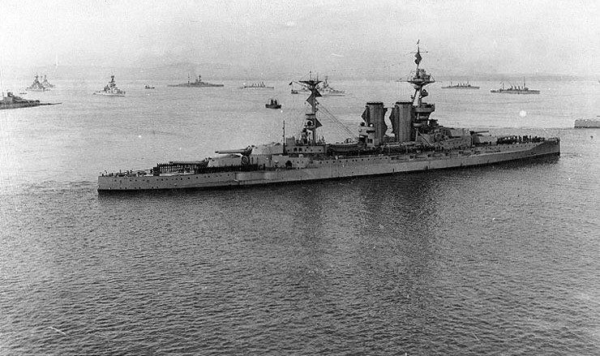
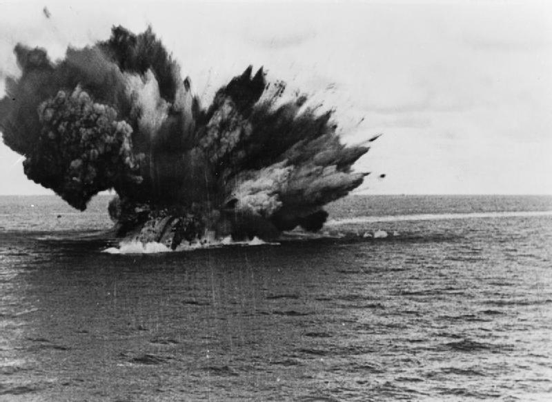
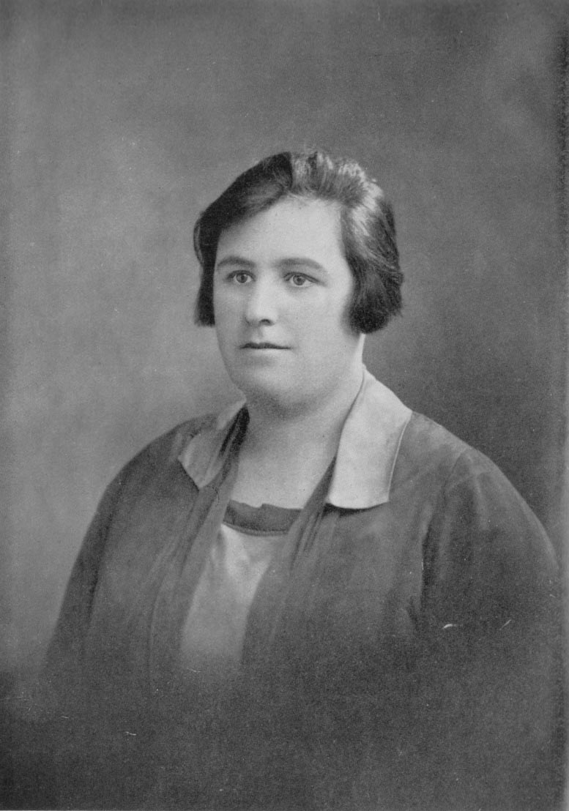
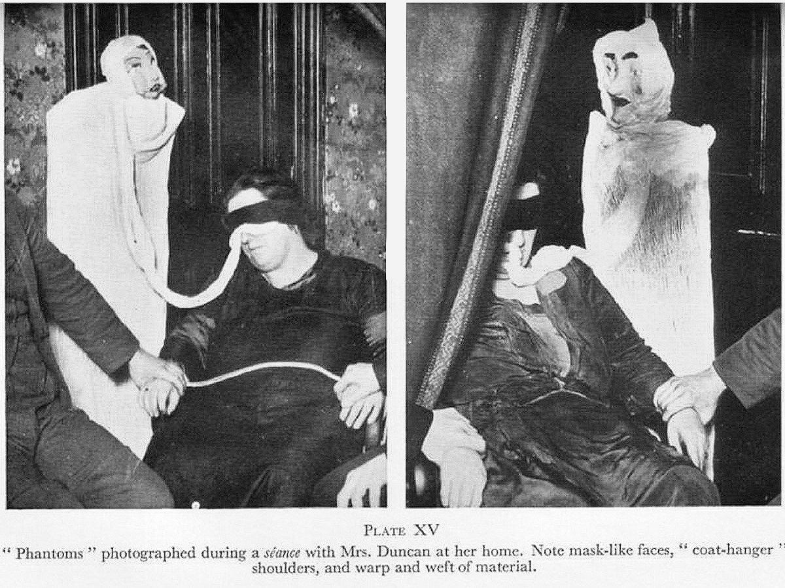
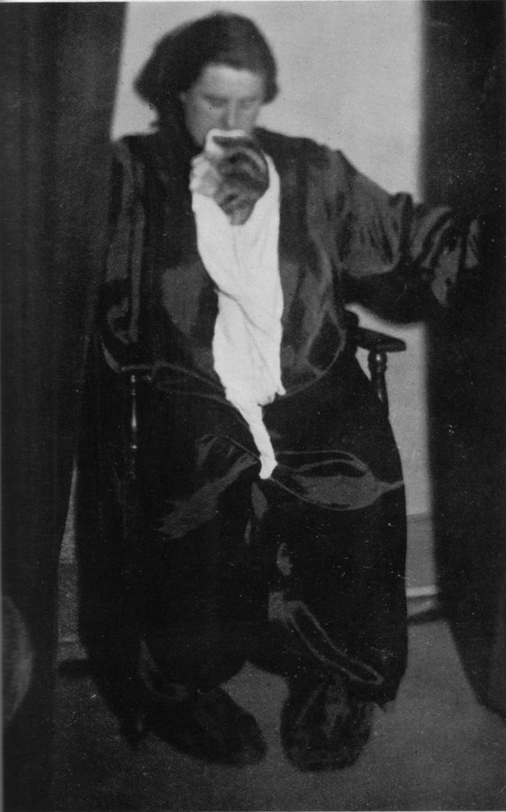
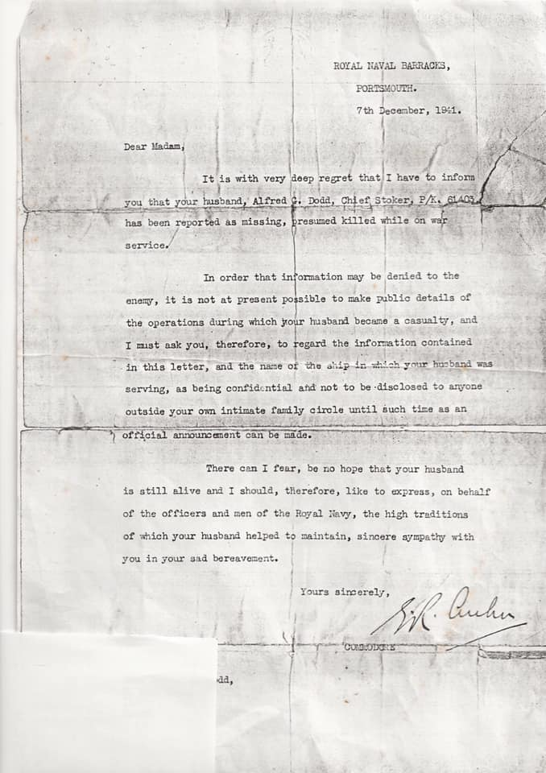
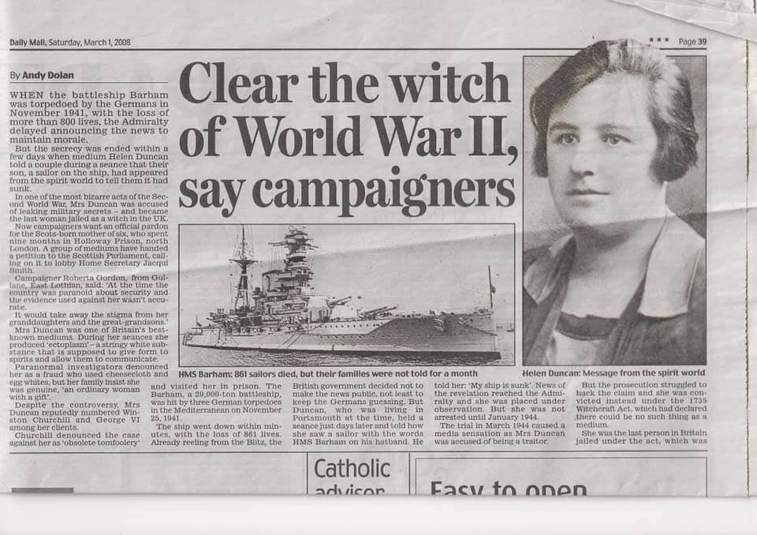
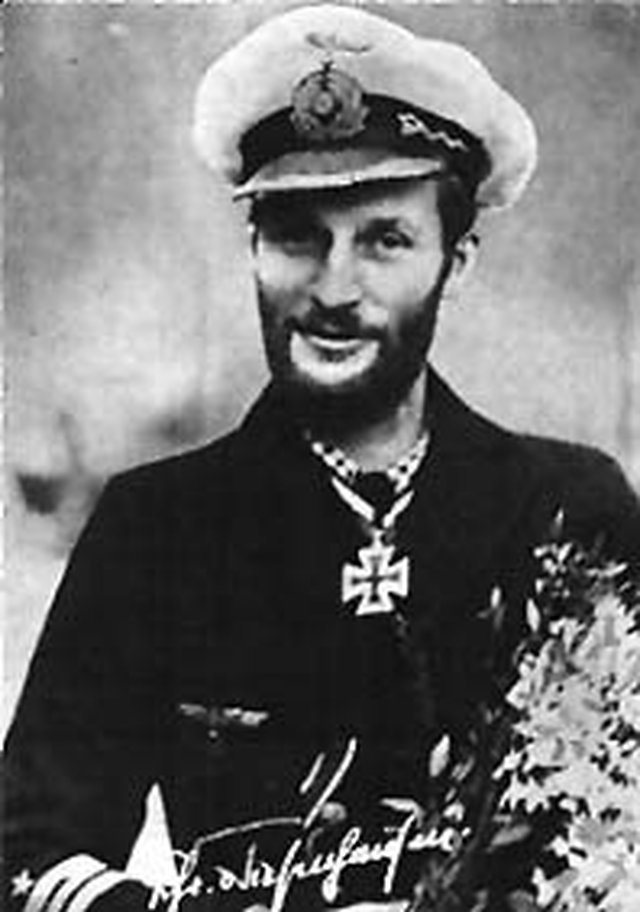

전함 HMS Barham의 격침과 영국 최후의 마녀 이야기
게시: 2020-06-25T06:30:17+09:00
1941년 11월 26일은 독일 해군 중위 티센하우젠(Hans-Diedrich von Tiesenhausen)에게 운수 대통한 날이었습니다. 그의 잠수함 U-331의 음탐사가 멀리서 들려오는 군함들의 엔진 소리를 탐지한 것입니다. 그리고 그 군함들은 대략 그의 잠수함 쪽으로 다가오고 있었습니다. 이 군함들의 정체는 영국 해군 전함 3척과 그를 둘러싼 구축함 8척이었습니다. 티센하우젠 중위는 알 방법이 없었겠지만, 이들은 리비아로 향하는 이탈리아군 수송단을 요격하기 위해 알렉산드리아 항구를 나선 퀸 엘리자베스 호(HMS Queen Elizabeth), 밸리언트 호(HMS Valiant), 그리고 바럼 호(HMS Barham), 그러니까 모두 1910년 초반에 진수된 퀸 엘리자베스급 전함 3척과 그를 호위하는 구축함들이었습니다.

(1917년 영국 북부의 군항 스카파 플로우(Scapa Flow)에 정박한 바럼 호입니다. 바럼 호가 포함된 퀸 엘리자베스급 전함들은 연료를 석탄에서 중유로 바꾼 최초의 전함이었습니다. 덕분에 24 노트 이상의 속력을 낼 수 있었던 이들은 모두 제2차 세계대전에서도 맹활약했고, 그 중 가장 유명한 전함은 HMS Warspite 입니다.)
U-331은 용케 영국 구축함들의 초계선을 뚫고 전함들에게 접근했고, 첫번째 전함은 놓쳤지만 두번째 전함을 향해 어뢰 4발을 일제히 발사할 수 있었습니다. 거리는 375m, 매우 가까웠습니다. 하지만 때마침 U-331이 발각되어 영국 전함들이 대공포로 사격을 시작했고, 티센하우젠 중위는 급히 잠항해야 했습니다. 그의 음탐사는 어뢰 1발이 명중하는 소리를 들었습니다. 영국 구축함들이 미친 듯이 폭뢰를 뿌려댔지만 U-331은 무사히 그 해역을 빠져나올 수 있었고, 티센하우젠은 과연 그가 명중시킨 전함의 이름과 그 피해를 궁금해하며 기지로 돌아갔습니다.
어뢰에 피격된 전함은 바럼이었고, U-331의 음탐사의 겸손한 분석과는 달리 4발 중 3발의 어뢰를 좌현에 고스란히 얻어 맞았습니다. 바럼은 급격히 기울어져 옆으로 드러누웠고, 곧 이어 엄청난 폭발을 일으켰습니다. 어뢰 폭발이 일으킨 화재가 탄약고에 도달했기 때문이었습니다. 어뢰에 피격된지 4분 만에, 바럼은 대폭발과 함께 침몰했습니다. 862명의 장교와 수병들이 목숨을 잃었고, 구조된 승조원들은 채 5백도 되지 않았습니다.

(폭발하는 바럼. 바로 뒤를 따르던 밸리언트 호에 타고 있던 사진기자가 찍은 것입니다.)
한편, 며칠 뒤 영국 포츠머스(Portsmouth)의 한 가정집에서는 강령술이 수행되고 있었습니다. 헬렌 덩컨(Helen Duncan)이라는 40대의 스코틀랜드 출신의 여성 영매가 주도하던 이 강령술에서, 영매는 자신이 불러낸 젊은이의 영혼이 '자기가 탄 배가 침몰했다' 라고 말했다면서, 그가 쓴 수병모의 장식띠(hat-band)에는 HMS Barham이라는 글자가 씌여 있다고 주장했습니다. 참석자들은 술렁였습니다. 그리고 이 술렁임은 약 2달 뒤인 1942년 1월 바럼 호의 격침 소식이 보도되면서 경외의 감탄으로 바뀌었습니다. 헬렌 던컨은 해군 당국에서도 주목하는 인물이 되었습니다.
당시 영국 해군 당국은 바럼 호의 격침 소식을 비밀에 붙이고 있었습니다. 그 이유는 전시 국민 사기를 고려한 것도 있었습니다만, 독일 해군에게 자신들의 전과를 알려주지 않으려 한 것이 더 컸습니다. 3만3천톤급 전함 1척의 손실은 당시 지중해에서의 해군 전력의 큰 변화라고 할 수 있었습니다. 그 빈틈을 메울 전함 재배치를 끝내기 전에는 그 소식이 적국에 알려지는 것을 원치 않았던 것입니다. 실제로 공격이 이루어진 뒤 그 전과 확인은 주요 군사작전의 하나입니다. 가령 폭격기 편대를 이용하여 적의 공장 지대나 도시 등을 폭격할 때의 절차는 먼저 정찰기를 띄워서 목표물의 현황을 확인하고, 폭격기들을 보내 폭탄을 왕창 던진 뒤, 다시 정찰기를 보내 반드시 전과를 확인했습니다. 그래야 거기에 다시 폭격기를 보내야 하는지 아니면 다음 도시로 목표물을 변경해도 되는지 결정할 수 있었으니까요. 그런 과정에서 정찰기가 손실되는 등 인적 물적 손해도 따르는 것은 물론이었습니다. 그런데 아군 함대의 손실을 고스란히 신문에 보도해서 적군의 수고를 덜어주는 일은 있을 수 없었지요. 그래서 해군에서는 2달 넘게 바럼 호의 격침 소식을 비밀에 붙였던 것입니다.

(군사적 가치가 있는 영매 헬런 던컨입니다.)
그런 상황에서 불과 격침 며칠 뒤에 헬런 던컨이라는 여자가 강령술에서 바럼 호의 격침 소식을 정확히 알아내자 해군 당국도 긴장할 수 밖에 없었습니다. 헬런 던컨은 1920년대 후반부터 이름을 떨치기 시작한 유명한 인사로서, 특히 입을 통해서 심령체(ectoplasm)를 토해내는 것으로 잘 알려진 유명한 영매였습니다. 그녀의 강령술에 참여했던 많은 사람들은 그녀가 입으로 토해내는 희뿌연 심령체를 직접 보고는 그녀의 말을 믿지 않을 수 없었습니다. 그녀의 고객 중에는 유명 인사들도 많았다는데, 확인된 바는 없지만 본인 주장에 따르면 그 중에는 윈스턴 처칠과 영국 국왕 조지 6세까지도 있었습니다. 역사학자이자 비밀결사 프리메이슨(Freemason)의 일원이었던 알프레드 도드(Alfred Dodd)는 공식 재판정에서 이 여자가 진짜 영매라고 증언하기도 했습니다.
과연 이 여자는 진짜 영매였을까요 ? 확실한 것은 뭔가 이야기가 잘 안되었는지 1944년 당국은 이 여성을 체포하여 정식 재판에 걸었고, 재판에서는 1735년 제정된 마녀 처벌법(Witchcraft Act)으로 유죄 판결을 내렸다는 것입니다. 또한 윈스턴 처질이 그 판결에 대해 '구시대적인 바보짓(obsolete tomfoolery)'이라며 펄쩍 뛰었고 직접 구치소로 던컨을 방문까지 했다는 것이었습니다. 정말 이 영매의 주요 고객 중에 윈스턴 처질도 있었던 것일까요 ? 혹시 해군 당국도 이 영매를 통해서 전쟁의 향방을 가를 수 있는 정보를 저승으로부터 얻으려 했던 것일까요 ?
물론 전혀 그렇지 않았습니다.
 
(헬런 던컨이 수행한 강령술에서 실제로 나타난 심령체의 모습입니다. 진짜 심령체로 보이십니까 ? 그러시다면 여러분이 바로 호구입니다.)
한참 활동하던 1930년 대에 이미 많은 사람들이 이 여자가 가짜 영매 사기꾼에 불과하다는 것을 다 알고 있었습니다. 몇몇 사람들이 이 여자가 입으로 토해내는 심령체의 사진을 찍었는데, 사진을 보면 그 심령체는 그냥 헝겊과 종이탈로 만든 허접한 인형이라는 것이 명백하게 보입니다. 실제로 심령체 일부를 채취해서 조사해본 결과, 그건 그냥 치즈 만들 때 사용하는 얇은 거즈 천에 불과했습니다. 던컨의 재주는 강령술 현장의 분위기를 그럴싸 하게 조성하는 것과, 미리 삼켜둔 천을 자유자제로 토해내는 것 뿐이었습니다. 이를 입증하기 위해 어떤 기자가 강령술 직전에 파란 식용 색소 알약을 내밀며 이것을 삼키고 강령술을 시작하면 거액을 주겠다고 제안했지만, 던컨은 완강히 거부했습니다.
그러면 던컨은 바럼 호의 격침 소식을 어떻게 알게 되었던 것일까요 ? 그리고 왜 영국 해군은 던컨에게 마녀 처벌법을 들이대며 그녀를 감방에 가두었던 것일까요 ?
간단합니다. 당시 영국 해군은 군사 보안이 중요하다고 해도 같은 동료 군인들의 직계 가족들에게는 그 전사 소식을 전해야 한다고 생각했고 아래 사진과 같은 전사 통지서를 보냈습니다. 그러면서 그 내용은 군사기밀이므로 바럼 호의 격침 사실은 '아주 가까운 가족(your own intimate family)' 외에는 절대 비밀에 붙여야 한다고 신신당부를 했지요. 당연히 그 비밀은 잘 지켜지지 않았습니다. 불과 몇 다리 건너면 다들 서로 아는 사이인 것처럼, 던컨에게까지 바럼 호의 격침 소식이 전해지기까지는 며칠 이상 걸리지 않았던 것이지요.

(페이스북 그룹인 'Battleships and battlecruisers'에서 어떤 분이 공개한 자기 가족이 받았던 바럼 호 승조원의 전사 통지서입니다.)
영국 해군 당국은 이런 보안 위반에 대해 던컨을 처벌하기를 원했습니다. 그러나 자신이 정말 영매이고 자신은 불쌍한 영혼이 말해준 것을 전달했을 뿐이라고 주장하는 던컨을 처벌할 법 규정이 마땅치 않았습니다. 그러다가 고민하던 검사의 눈에 1735년에 제정되었던 마녀 처벌법이 들어온 것이지요. 모양새는 무척 이상하긴 했지만 아무튼 전시에 개인의 금전적 이익을 위해 군사 기밀을 누출한 던컨에게 정의 구현이 되긴 한 것입니다.
그 결과, 헬런 덩컨은 공식적으로 기록된 '영국의 마지막 마녀'가 된 것입니다. 덩컨은 9개월을 복역하고 석방되었는데, 그 이후에도 또 강령술을 하며 용돈벌이를 했다고 합니다.

(던컨의 사후 사면을 촉구하는 운동가들의 기사가 실린 2008년 영국 신문입니다.)
하지만 여기서 저 개인적으로 석연치 않은 점이 있습니다. 저 위 편지에 나와 있듯이, 바럼 호의 격침 소식을 알린 편지는 전사자 가족들에게도 12월 7일에나 발송되었습니다. 아마 가족들이 편지를 받은 것은 며칠 뒤였을 것입니다. 그런데 분명히 던컨은 11월 말, 바럼의 격침 불과 며칠 후에 이미 강령술을 시행했습니다. 혹시 던컨이 정말 영매였을까요 ? 그건 아무도 모르는 일입니다. (어쩌면 제가 호구 기질이 다분한지도 모르겠네요.)
아, 그리고 독일 해군은 바럼의 격침 사실을 과연 던컨의 가짜 강령술 덕분에 미리 알게 되었을까요 ? 바럼을 격침시킨 티센하우젠 중위는 자신이 바럼을 격침시켰다는 것을 1942년 1월에야 영국이 공식 발표한 신문 기사를 보고 알게 되었고, 그 기사가 나자마자 그에 대한 포상으로 대위 승진과 함께 철십자 훈장을 받았습니다. 다만 그 해 11월, 연합군의 북아프리카 침공을 저지하다가 영국 해군 뇌격기의 공격에 U-331은 격침되었고 그는 영국군의 포로가 되었습니다. 전쟁 후에는 캐나다로 이민가서 실내 건축가가 되었다고 하네요.

(미래의 캐나다 실내 건축가 티센하우젠 씨입니다.)
Source : https://en.wikipedia.org/wiki/Helen_Duncan
https://en.wikipedia.org/wiki/HMS_Barham_(04)
https://en.wikipedia.org/wiki/Witchcraft_Act_1735
https://en.wikipedia.org/wiki/Hans-Diedrich_von_Tiesenhausen